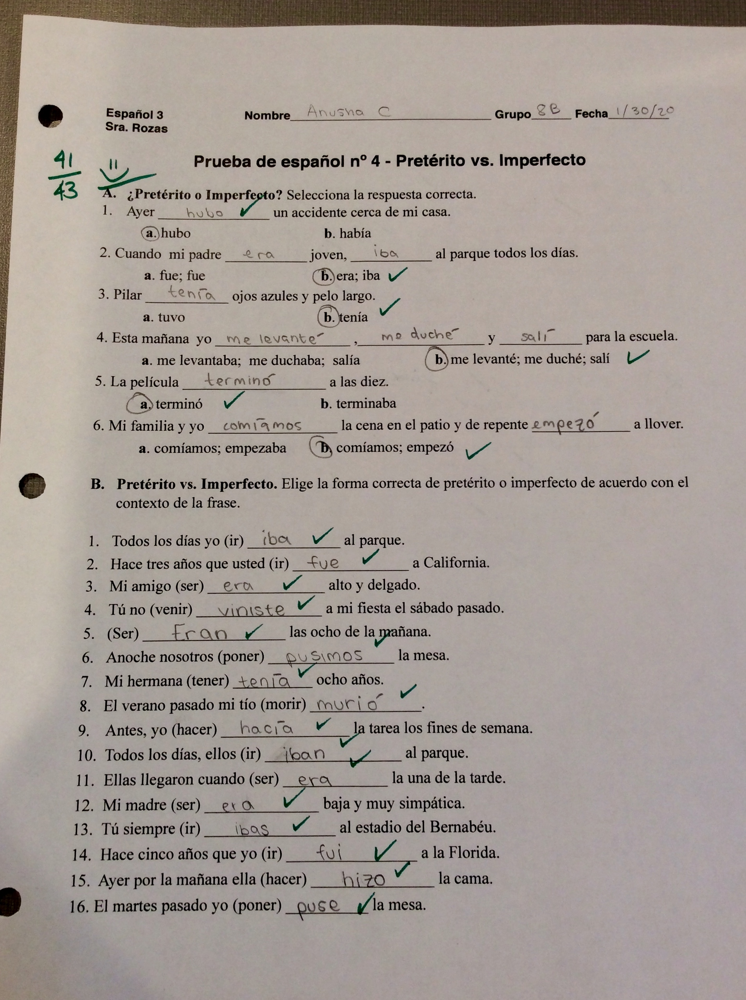
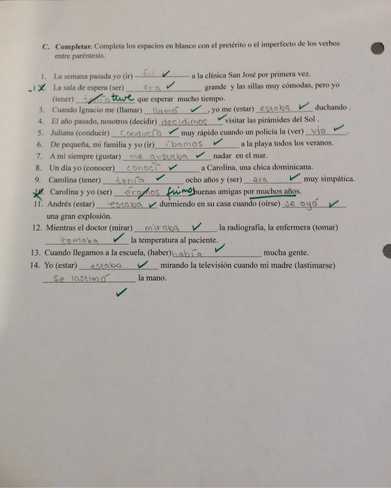

This is my poem that I wrote about a character in the Scarlet Letter. On this poem I got 100 percent. This artifact reflects my Habit of Minds, that I can produce "Quality Projects and Assignments." Also, it reflects my strength, because if I wasnt organized with my notes about Roger Chillingworth in my book, I wouldnt have been able to as deep of an analysis on Chillingworth's nature.

In this spanish test I got the highest grade in the class. The week before, I studied really hard because I knew the test would be hard. This reflects my strength that I am organized, because I worked through the test methodically and if I didnt know what to put down, I made a well made guess.
 